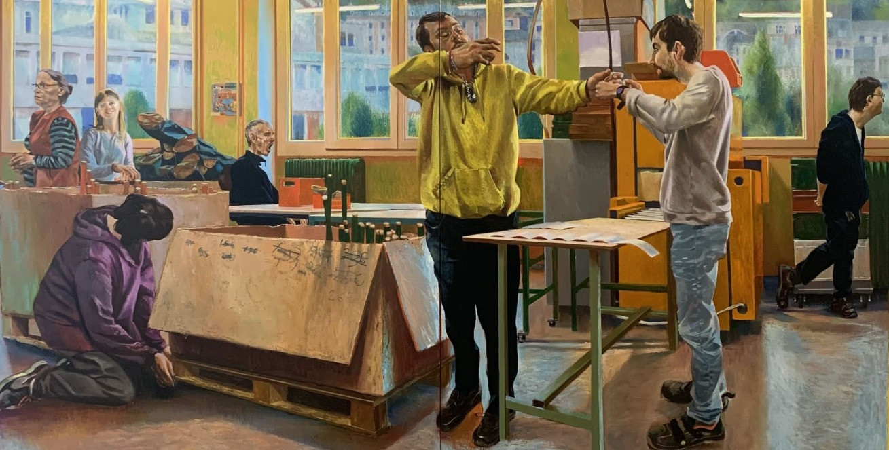
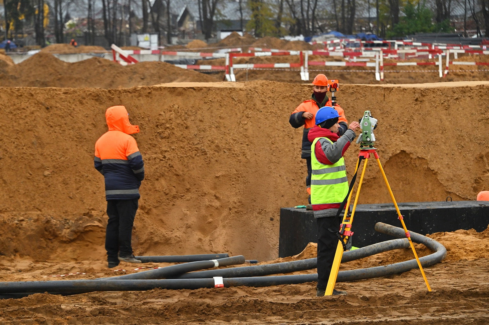
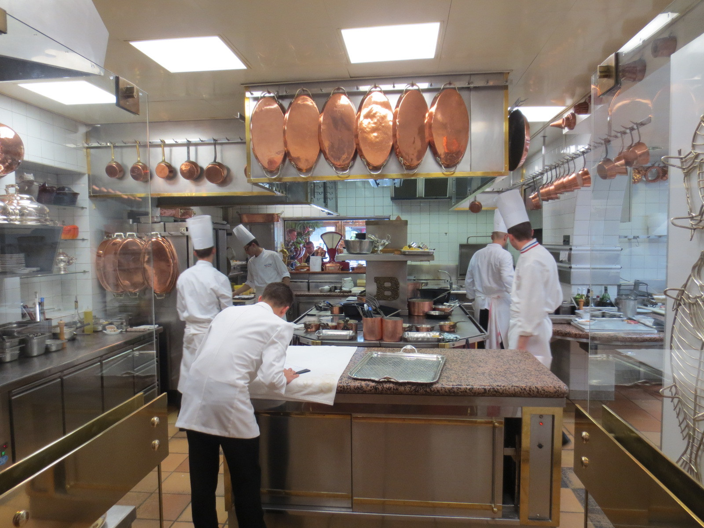

A carpenter's workshop in Paris. Photo: Jorge Royan. CC BY-SA 3.0, Wikimedia Commons.
Anglais · CAP et baccalauréat professionnel · A2 et B1
S'exprimer en anglais sur le lieu de travail
Speaking English at work: PFMP, workshop, customers

Tableau : Laurent Proux
conçu par Madame Carole Paoli Pompougnac
Une fiche de vocabulaire, à elle seule, ne prépare pas un élève de lycée professionnel à parler anglais sur un lieu de travail. Cette séquence propose une mise en situation complète, portée par un scénario professionnel réaliste, une œuvre d'art comme amorce et comme fil, un travail régulier des cinq activités langagières du Bulletin officiel, et une tâche finale évaluable, proche des situations de CCF.
Sur le lieu de travail
Trois lieux réels, pour entrer dans la séquence : un atelier, un chantier, une cuisine professionnelle.
Un ouvrier découpe un métal, avec un jet d'étincelles. Photo : Aniskov, CC BY 4.0, Wikimedia Commons.

Un chantier : casques, gilets de visibilité, instrument de mesure. Photo : service de presse du complexe d'urbanisme de Moscou, CC BY 4.0, Wikimedia Commons.

La cuisine de l'Auberge du Pont de Collonges. Photo : Arnaud 25, CC BY-SA 3.0, Wikimedia Commons.
Fiche d'identité
Public
Élèves de CAP et de baccalauréat professionnel, toutes filières, niveaux A2 à B1 du CECRL. Dans une même leçon, les activités sont communes. Les textes, le volume à produire et le degré d'étayage sont différenciés.
Durée
Huit leçons de 55 minutes. L'évaluation écrite de la tâche finale peut, si l'enseignant le souhaite, être passée dans un temps séparé de 20 à 25 minutes.
Programme
Programmes d'enseignement de langues vivantes des classes préparant au certificat d'aptitude professionnelle et des classes de seconde, première et terminale professionnelles. Arrêté du 3 avril 2019, Bulletin officiel spécial n° 5 du 11 avril 2019.
Fil visuel
Une œuvre de Laurent Proux, peintre contemporain français du monde du travail, représentant de jeunes personnes et des adultes au travail dans un atelier scolaire, avec des cartons et des établis devant de grandes fenêtres. Pas de titre inventé.
Auteure
Madame Carole Paoli Pompougnac, professeure d'anglais et de français en lycée professionnel.
Les consignes destinées à l'enseignant sont en français. Les consignes, textes, dialogues et traces destinés aux élèves sont en anglais.
Les cinq activités langagières
Le programme de langues vivantes de la voie professionnelle (2019) fixe une approche actionnelle : l'élève est un usager de la langue, engagé dans une tâche de communication. Il vise le niveau A2 en CAP et le niveau B1 en baccalauréat professionnel. Cette séquence travaille les cinq activités langagières prévues par le Bulletin officiel. Chaque leçon annonce les activités qu'elle entraîne. L'ensemble de la séquence, y compris la tâche finale, les couvre toutes.
CECompréhension de l'écrit
COCompréhension de l'oral
EEExpression écrite
EOCExpression orale en continu
IOInteraction orale
L'œuvre de Laurent Proux
Laurent Proux est un peintre contemporain français du monde du travail. L'œuvre retenue pour cette séquence représente de jeunes personnes et des adultes qui travaillent dans un atelier scolaire. On y voit des cartons et des établis, devant de grandes fenêtres.
Ce que l'on peut dire, parce que cela se voit : de jeunes personnes et des adultes sont au travail dans un atelier scolaire. Il y a des établis. Il y a des cartons. Il y a de grandes fenêtres.
Ce que l'on ne dit pas comme un fait : le titre de l'œuvre (il n'est pas donné dans cette séquence, et l'on n'en invente pas), le nom des personnes, ce qu'elles fabriquent exactement, le contenu précis des cartons, leurs paroles, leurs pensées, leur métier exact. Tout cela appartient à l'hypothèse, clairement présentée comme telle.
L'œuvre ouvre la leçon 1 : décrire, émettre des hypothèses, se demander qui sont ces personnes, ce qu'elles fabriquent, ce qu'elles se diraient. Elle revient ensuite à chaque leçon, quelques minutes, comme un lieu familier : un salut, une action en present continuous, une consigne, une règle de sécurité, un carton abîmé, l'arrivée d'un client, le décor de la tâche finale. Les élèves ne « font pas de l'art » à la place de l'anglais. Ils parlent anglais à partir d'une image juste, riche, et proche de leur atelier.
Le scénario
Le lycée va recevoir un visiteur anglophone dans l'atelier (un client, un technicien partenaire, ou un nouveau collègue). En même temps, les élèves préparent leur PFMP ou viennent d'en revenir. Tout au long de la séquence, ils se préparent à trois prises de parole réelles :
accueillir quelqu'un dans l'atelier et expliquer ce qui s'y passe ;
donner une consigne, rappeler une règle de sécurité, signaler un problème et proposer une solution ;
parler au tuteur de PFMP et rendre compte, à l'oral et à l'écrit, d'une tâche accomplie.
L'atelier du tableau de Laurent Proux est le décor de référence. Les élèves peuvent, le moment venu, transposer ce décor à leur propre lieu de formation : atelier de maintenance, ligne de production, chantier, magasin, cuisine ou salle de restaurant.
Adaptation aux métiers
Le scénario reste le même. On change le lexique, quelques objets, et le profil du visiteur. Les dialogues modèles de chaque leçon proposent une version « atelier » et, en variante, une version métier. L'enseignant choisit la variante dominante de la classe, tout en gardant le cœur commun : salutations, consignes, sécurité, problème, client, tuteur, PFMP. Dans une classe aux métiers mélangés, on peut constituer des binômes par famille de métiers pour les jeux de rôle, et conserver les activités collectives sur l'œuvre et sur la grammaire.
Maintenance et métiers industriels. Le visiteur est un technicien ou un client d'une entreprise partenaire. On explique une réparation, une vérification, une pièce, une machine à arrêter avant toute intervention.
Bâtiment. Le visiteur est un client ou un chef de chantier anglophone. On explique une tâche sur le chantier, une règle de sécurité (casque, chaussures), un retard et une solution.
Vente et accueil. Le visiteur est un client. On accueille, on présente un produit ou une commande, on traite un problème (carton abîmé, taille, échange) avec politesse.
Restauration. Le visiteur est un client ou un nouveau collègue. On accueille, on explique une tâche en cuisine ou en salle, une règle d'hygiène, un problème de commande et la solution.
Objectifs langagiers
Fonctions de communication
Saluer et se présenter sur un lieu de travail. Présenter un collègue. Prendre congé. Demander et donner des consignes. Demander de répéter ou de clarifier. Nommer des outils et des matériaux. Rappeler une règle de sécurité. Signaler un problème. S'excuser. Proposer une solution. Faire une demande polie. Expliquer une tâche à un client. Parler à son tuteur de PFMP. Rendre compte d'une journée ou d'une tâche.
Lexique
Le lexique de l'atelier à partir de l'œuvre (workshop, workbench, cardboard box, window, young people, adults, to work, to make). Le lexique fonctionnel du quotidien professionnel (hello, good morning, please, thank you, I'm sorry, over there, at the moment). Le lexique spécialisé, au choix du métier, dans les banques Building your vocabulary et Expanding your vocabulary. Les mots de la sécurité. Les mots du compte rendu (task, problem, solution, I learned, I helped, I checked). Voir aussi les banques lexicales par métier.
Grammaire, toujours en contexte
Leçon 1 et leçon 3 : present continuous (They are working. What is he doing?).
Leçon 2 et leçon 7 : formes polies (Nice to meet you. Could you... ? I'd like to... Would you mind... ?).
Leçon 4 : impératif et enchaînement d'une procédure (Put on your gloves. First, switch off the machine.).
Leçon 5 : modaux must, have to, should, can, can't.
Leçon 6 et leçon 7 : past simple pour raconter un problème et rendre compte d'une PFMP (The box arrived damaged. I checked the engine. We replaced the part.).
Phonologie
Intonation montante des salutations et des demandes polies. Forme faible de can (/kən/) dans Can you pass me... ? et forme pleine de can't. Must et mustn't. Terminaisons du past simple (/t/, /d/, /ɪd/). L'enseignant corrige surtout ce qui gêne la compréhension, et fait répéter les formules modèles à voix haute avant les jeux de rôle.
Les huit leçons
Huit leçons de 55 minutes, dans cet ordre. Le lexique et les structures sont recyclés d'une leçon à l'autre. La leçon 7 prépare la tâche finale. La leçon 8 la réalise à l'oral, à partir d'un écrit et d'un oral professionnel. Le compte rendu de PFMP en anglais, partie écrite de la tâche finale, est rédigé à la leçon 7 et peut être mis au propre à la maison ou dans un temps d'évaluation séparé.
(Variantes d'intitulé, selon le métier : Welcome to the site, Welcome to the shop, Welcome to the kitchen.)
Un visiteur anglophone arrive sur le lieu de travail (client, technicien, ou nouveau collègue, selon l'option choisie). L'élève le reçoit. Il s'appuie sur un courriel lu en classe (CE) et sur un message oral du tuteur (CO). Il prend la parole en continu, puis répond aux questions du visiteur (EOC et IO). Il a également rédigé un court compte rendu de PFMP en anglais (EE), préparé à la leçon 7.
À l'oral (4 minutes en A2, 5 à 6 minutes en B1), en binôme ou à trois
Saluer le visiteur et se présenter (nom, rôle, lieu).
Dire ce qui se passe dans l'atelier, en lien avec la scène de Laurent Proux si cela aide (present continuous).
Expliquer une tâche (consignes claires, impératif ou you have to).
Rappeler une règle de sécurité (must / have to / should / can't).
Raconter un problème qui s'est produit et la solution trouvée (past simple).
Répondre aux questions du visiteur, demander de répéter si besoin, rester poli.
À l'écrit
Un court compte rendu de PFMP en anglais, à la première personne : le lieu, le tuteur, les tâches accomplies, un problème et une solution, ce que l'élève a appris. Volume visé : 60 à 80 mots en A2 (CAP), 120 à 150 mots en B1 (bac pro). Ce n'est pas un document administratif français. C'est une prise de parole écrite professionnelle, évaluable en CCF.
Options selon les métiers
Maintenance ou industriel. Vous recevez un technicien d'une entreprise partenaire. Vous lui montrez une machine. Vous expliquez une vérification ou une réparation. Vous rappelez qu'il faut arrêter la machine avant d'intervenir. Vous racontez une panne récente et ce que vous avez fait.
Bâtiment. Vous recevez un client sur le chantier. Vous expliquez la tâche du jour. Vous rappelez le port du casque et des chaussures de sécurité. Vous expliquez un retard (la livraison, la pluie) et la solution.
Vente et accueil. Vous recevez un client. Vous présentez un produit ou une commande. Vous traitez un problème (carton abîmé, article manquant, échange) et proposez une solution polie.
Restauration. Vous recevez un client ou un nouveau collègue. Vous expliquez une tâche en cuisine ou en salle. Vous rappelez une règle d'hygiène. Vous racontez une erreur de commande et ce que vous avez fait.
Conditions de passation, utiles pour un CCF
L'élève a droit à des notes courtes (mots-clés, pas de texte rédigé). En A2, une banque de mots peut rester visible.
Le visiteur est l'enseignant, ou un camarade préparé, ou les deux (un camarade joue, l'enseignant pose une ou deux questions imprévues).
Questions imprévues possibles, à choisir parmi celles-ci : Who is your tutor? What time do you start? Can I leave my bag here? What happens if there is a problem? What did you do yesterday? Can you say that again, please?
La compréhension de l'écrit et la compréhension de l'oral de la leçon 8 font partie de la même situation : elles donnent à l'élève les informations dont il a besoin pour parler.
L'écrit (compte rendu de PFMP) peut être recueilli à la leçon 7, rendu au propre avant la leçon 8, ou passé dans un temps d'évaluation écrit de 20 à 25 minutes.
La grille d'évaluation porte sur les cinq activités langagières. Elle est conçue pour un usage CCF.
Évaluations et grille CCF
La grille porte sur les cinq activités langagières. Elle peut servir pour la situation de la leçon 8 (CE, CO, EOC, IO) et pour le compte rendu de PFMP (EE) rédigé à la leçon 7. Chaque activité est notée sur 4, pour un total sur 20. Les descripteurs existent en deux colonnes, CAP (A2) et baccalauréat professionnel (B1). On évalue selon le niveau visé de la classe, sans demander du B1 à un élève de CAP.
Note /4
Échelle
4
Très bonne maîtrise. L'élève satisfait pleinement au descripteur, avec aisance.
3
Maîtrise satisfaisante. L'élève satisfait au descripteur, avec quelques imperfections qui ne gênent pas la communication.
2
Maîtrise partielle. L'élève ne satisfait que partiellement au descripteur ; la communication passe par moments, avec des aides ou des lacunes.
1
Maîtrise insuffisante. L'élève ne satisfait pas au descripteur ; la communication est très limitée ou hors sujet.
0
Absence de production, ou production entièrement hors de la tâche.
On n'utilise pas de demi-points si l'on veut un barème simple et défendable. Un commentaire qualitatif complète toujours la note. L'évaluation porte sur la communication réussie, pas sur l'absence totale d'erreurs. Une erreur de langue qui n'empêche pas de comprendre ne fait pas à elle seule baisser la note d'un cran.
La page de la grille donne les descripteurs A2 et B1 pour chaque activité, la fiche individuelle imprimable, et les repères de passation. Le document est aussi disponible en pdf, docx et odt ci-dessous.
Téléchargements
Chaque document existe en pdf, en Word (docx) et en OpenDocument (odt).
Évaluation au format de l'épreuve ponctuelle et du CCF (version prof)
Rappel du format officiel (arrêté du 17 juin 2020, annexe V ; épreuve de langue vivante, baccalauréat professionnel, coefficient 2, BO n° 47 du 16 décembre 2021) :
Situation A, écrite, 1 heure au plus, en dernière année de formation : compréhension de l'oral (document de 1 min 30 au plus, entendu trois fois, une minute entre les écoutes, compte rendu en français) ; compréhension de l'écrit (document authentique inconnu de 15 lignes de 70 caractères au plus, compte rendu en français) ; expression écrite (deux sujets au choix, l'un sur la vie quotidienne, l'autre sur la vie professionnelle, 100 à 120 mots au moins).
Situation B, orale, 10 minutes : expression orale en continu, 5 minutes au plus, sur un travail, un projet, un produit, un service ou une expérience professionnelle, sans lecture, notes et une image autorisées ; puis interaction, 5 minutes au plus.
Élèves des établissements publics ou privés sous contrat et apprentis des CFA habilités : CCF. Autres candidats : épreuve ponctuelle, mêmes activités, une partie écrite d'une heure et une partie orale de dix minutes.
Ce sujet sert d'entraînement en Seconde ou en Première, et de blanc en Terminale. Version prof seulement.
Situation A blanche, en une lesson de 52 minutes (version prof)
Minutes
Étape
Ce que font les élèves
Activité
0 à 2
Consignes
Les élèves lisent les trois parties et choisissent leur sujet d'expression écrite.
Lecture
2 à 17
Compréhension de l'oral
Trois écoutes du document (1 min 30 au plus), une minute entre chaque écoute ; prise de notes ; compte rendu en français.
CO
17 à 32
Compréhension de l'écrit
Lecture du document, compte rendu en français guidé par les questions.
CE
32 à 50
Expression écrite
Un sujet au choix, 100 à 120 mots au moins.
PE
50 à 52
Ramassage
Relecture, comptage des mots, ramassage.
52 à 55
Marge
Rangement, sortie de la salle. La lesson dure 55 minutes, minutée sur 52.
Compréhension de l'oral, CO
Transcript (version prof seulement)
> Hello, I work here. My name is Léa, I'm on PFMP this month. If you need help, I can show you the storeroom, and I can call my tutor. Please put on a badge, and don't go behind the yellow line. This morning a customer asked: « Can you show me how this works? » I didn't invent a long speech. I showed three steps, then I checked: « Is that clear? » When there's a problem, I say what I see, where it is, and what I've already done. That's all. It's enough to be useful, and it's enough to be safe.
Consigne : « Écoutez trois fois le document. Rendez compte en français de ce que vous avez compris : qui parle, de quoi, où, pourquoi, et ce que la personne pense. »
Corrigé (version prof). Léa, en PFMP, s'accueille : elle travaille ici, peut montrer le local et appeler son tuteur. Consigne : badge, ne pas passer la ligne jaune. Un client a demandé une démonstration ; elle a montré trois étapes, puis vérifié la compréhension. En cas de problème, elle dit ce qu'elle voit, où, et ce qu'elle a déjà fait. C'est assez pour être utile et pour rester en sécurité.
Compréhension de l'écrit, CE
Texte d'entraînement (le jour du CCF, prendre un document authentique inconnu de 15 lignes au plus) :
> Speaking English at work does not mean speaking like a book. It means greeting, showing, warning, and reporting a problem in a way people can use. In this sequence we have looked at pictures of work, learnt to say « I work here », described actions, given a short procedure, read safety rules, and spoken to customers and tutors. The final task is a welcome to the workshop: a place, a few rules, an offer of help. On PFMP, or in a CFA, that welcome is already a professional act. Keep it short, keep it true, and keep it polite.
Source : texte d'entraînement écrit pour la classe.
Consigne : « Rendez compte en français du document. Aidez-vous des questions. »
Quel est le message principal du texte ?
Quelles actions langagières sont citées ?
Que reprend le texte de la séquence ?
Quelle est la tâche finale ?
Quelles qualités sont demandées à l'accueil ?
Corrigé (version prof). Parler anglais au travail, ce n'est pas parler comme un livre : saluer, montrer, prévenir, signaler un problème. La séquence a travaillé l'image, la présentation, les actions, une procédure, la sécurité, le client et le tuteur. La tâche finale est un accueil (lieu, règles, offre d'aide), déjà un acte professionnel en PFMP ou en CFA. Court, vrai, poli.
Expression écrite, PE
Choisissez un sujet. Écrivez 100 à 120 mots au moins.
Sujet 1, vie professionnelle : Write a short welcome for a visitor or a new student on PFMP: who you are, two rules, and how you can help.
Sujet 2, vie quotidienne : There is a problem at work (a delivery, a machine, a customer). Write a message to your tutor: what, where, what you have already done.
Éléments de corrigé (version prof). Sujet 1 : salut, nom, deux règles, offre d'aide. Sujet 2 : trois informations utiles, ton calme. Lexique : I work here, can you show me, must, there's a problem, tutor. Pour un public CAP, 60 à 80 mots suffisent si l'on retient le format CAP ; pour le bac pro, 100 à 120 mots au moins.
Situation B blanche (version prof), 10 minutes par élève
Minutes
Étape
Ce que font les élèves
Activité
0 à 4
Installation
Ordre de passage ; les autres élèves préparent leur propre fiche en mots-clés.
Lecture
4 à 14
Passage
5 min de présentation sans lecture, 5 min d'échange.
PO
Puis
Passages suivants
Même déroulé.
PO
Production orale, PO
Présentez, en cinq minutes (ou trois minutes si le diplôme est le CAP), l'accueil de votre atelier ou de votre lieu de PFMP. Puis répondez aux questions. Une carte de mots-clés et une image sont autorisées, pas la lecture d'un texte.
Questions d'interaction possibles : What do you say first? How do you show a procedure? What is the first sentence if there is a safety problem?
Éléments de corrigé (version prof). Accueil bref, règles justes, interaction polie. CAP : phrases courtes, A2. Bac pro : un peu plus d'aisance, vers B1.
Grille nationale bac pro LVA (BO n° 47 du 16 décembre 2021, annexe 4), version prof
Chaque activité langagière est notée sur 20, puis ramenée pour un cinquième de la note finale. Repères de classe, alignés sur le B1+ visé en LVA (A2+ en LVB) :
Activité
1 à 5
6 à 10
11 à 15
16 à 20
CO
Quelques mots isolés
Le sujet général est repéré
Les informations principales sont rendues en français
L'essentiel, des détails et le point de vue sont rendus
CE
Quelques éléments isolés
Le thème et quelques faits
Les informations principales, liées entre elles
L'essentiel, des détails et l'implicite
PE
Hors sujet ou trop court
Sujet abordé, langue encore hésitante
Sujet traité, 100 mots au moins, langue compréhensible
Argument nuancé, lexique professionnel, langue assez sûre
PO (continu et interaction)
Lecteur, propos très court
Présente avec aide, répond peu
Présente sans lire, répond de façon simple
Présente clairement, interagit, lexique de la séquence
Sorties de secours, une par lesson (version prof)
À insérer à la fin de chaque lesson, au point d'arrêt. Si le temps manque, on condense à l'intérieur des 52 minutes. Trace écrite dictée, tour de table d'une phrase, homework au tableau.
Lesson 1. Looking at work
Emergency exit · 8 min. If time runs short at this stopping point, we condense: we dictate two sentences about the picture (who, where, what they might be doing) ; a round of the class, one sentence each ; the homework (learn six words from Expanding your vocabulary and write one caption) is written on the board.
Lesson 2. Hello, I work here
Emergency exit · 8 min. If time runs short at this stopping point, we condense: we dictate the model greeting (name, role, « I work here ») ; a round of the class, each student says the greeting once ; the homework (record a 20-second voicemail or write it in the notebook) is written on the board.
Lesson 3. What are they doing?
Emergency exit · 8 min. If time runs short at this stopping point, we condense: we dictate four actions in the present continuous ; a round of the class, one action each ; the homework (write five sentences: He is…, She is…) is written on the board.
Lesson 4. Can you show me how?
Emergency exit · 8 min. If time runs short at this stopping point, we condense: we dictate a short procedure in three steps (imperative or you + verb) ; a pair says the three steps once ; the homework (write the procedure and one polite question: Can you show me how?) is written on the board.
Lesson 5. Safety first
Emergency exit · 8 min. If time runs short at this stopping point, we condense: we dictate three safety rules (must / must not) ; a round of the class, one rule each ; the homework (draw or copy one sign and write the rule in English) is written on the board.
Lesson 6. There's a problem
Emergency exit · 8 min. If time runs short at this stopping point, we condense: we dictate a model for reporting a problem (what, where, what you have already done) ; two students say it once ; the homework (write a four-line message to a tutor: There's a problem…) is written on the board.
Lesson 7. Customers and tutors
Emergency exit · 8 min. If time runs short at this stopping point, we condense: we dictate two polite questions for a customer and one sentence for a tutor ; a round of the class, one sentence each ; the homework (prepare the keyword card for lesson 8, not a text to read) is written on the board.
Lesson 8. Welcome to the workshop
Emergency exit · 8 min. If time runs short at this stopping point, we condense the oral: each student gives a one-minute welcome only (place, one rule, one offer of help) ; we write the homework (reread the card, do not learn a speech by heart) on the board ; if a written welcome is due, we collect it and keep the longer oral for the next time.
Exemple travaillé, version prof
Exemple travaillé, baccalauréat professionnel, sur le texte d'évaluation (version prof)
Pour chaque tour : la question du professeur, la réponse attendue, et ce qui se resserre.
Tour
Question du professeur
Réponse attendue
Ce qui se resserre
1. Je remarque (I notice)
Qu'est-ce qui saute aux yeux ?
Parler anglais au travail, ce n'est pas parler comme un livre.
Une opposition claire ouvre le texte : l'usage contre le modèle scolaire.
2. Je repère (I spot)
Quels gestes le texte nomme-t-il ?
Saluer, montrer, prévenir, signaler un problème, d'une façon dont les autres peuvent se servir.
Quatre actes précis remplacent l'idée vague de « bien parler ».
3. Je comprends (I understand)
Que permettent de comprendre ces éléments ?
L'anglais professionnel se juge à l'utilité, pas à la longueur ni à l'élégance de la phrase.
Le critère se resserre : ce que l'équipe peut utiliser.
4. J'anticipe (I anticipate)
Que vise le texte ?
Il prépare l'accueil, la démonstration, l'alerte et le compte rendu, pour le CCF ou l'épreuve ponctuelle.
On anticipe le piège : un exposé général sur « le travail » sans geste utile.
5. Je trouve le sens (I find the meaning)
Quel est l'essentiel, et sa limite ?
Si un collègue peut se servir de ce que l'on dit, le travail de la langue est fait. Limite : une phrase utile n'excuse pas une erreur de sécurité, et l'inverse non plus : bien connaître le geste ne dispense pas de le dire clairement.
Une phrase défendable, avec sa limite.
Exemple travaillé, version prof
Exemple travaillé, CAP, sur le texte « Speaking English at work » (version prof)
Pour chaque tour : la question du professeur, la réponse attendue, et ce qui se resserre.
Tour
Question du professeur
Réponse attendue
Ce qui se resserre
1. Je remarque (I notice)
Qu'est-ce qui saute aux yeux dans ce texte ? Lisez la première phrase à voix haute.
« Speaking English at work does not mean speaking like a book. » Parler anglais au travail, ce n'est pas parler comme un livre.
On quitte une idée trop large (« il faut bien parler anglais ») ; le texte pose une opposition, dès le premier regard.
2. Je repère (I spot)
Quels gestes, quels verbes voyez-vous ensuite ? Donnez-en au moins trois.
Greet, show, warn, report a problem : saluer, montrer, prévenir, signaler un problème, d'une façon dont les autres peuvent se servir.
Ce n'est plus seulement une opposition de style ; ce sont quatre gestes du poste, déjà plus précis.
3. Je comprends (I understand)
Que vous apprennent ces gestes sur l'anglais au travail ?
L'anglais du poste, ce sont des actes utiles, pas une performance. Les collègues ont besoin de phrases dont ils peuvent se servir.
Le critère n'est plus la beauté de la phrase ; c'est l'usage, dans l'atelier ou à l'accueil.
4. Je trouve le sens (I find the meaning)
Quelle phrase essentielle pouvez-vous défendre, et quelle est sa limite ?
Si un collègue peut se servir de ce que je dis (bonjour, une démonstration, une alerte, un compte rendu), cela suffit. Limite : un long discours que personne ne peut utiliser ne fait pas le travail.
On arrive à une phrase défendable, avec sa limite, prête pour l'écrit de 60 à 80 mots ou pour l'oral de six minutes.
Dans chaque lesson, on applique la version qui correspond à la filière (complète en baccalauréat professionnel, courte en CAP), au document du jour.
Lesson
Document pour la spirale
1. Looking at work
L'image ou le texte sur le regard porté sur le travail
2. Hello, I work here
L'accueil, la première phrase
3. What are they doing?
Le geste observé, à nommer
4. Can you show me how?
La démonstration
5. Safety first
L'alerte ou la règle de sécurité
6. There's a problem
Le signalement d'un problème
7. Customers and tutors
L'échange avec un client ou un tuteur
8. Welcome to the workshop
L'accueil dans l'atelier
L’élève ne peut pas venir en classe ou est hospitalisé
S’exprimer en anglais sur le lieu de travail · Première baccalauréat professionnel, A2 vers B1 · contexte de la vie professionnelle (atelier, tuteur, client, sécurité, PFMP)
Comment travailler
Faire les 8 lessons dans l’ordre, une lesson par moment de travail de 30 à 40 minutes. Les jours de fatigue, faire seulement la version courte (15 minutes) : rien n’est perdu, la suite se rattrape au retour.
Ouvrir la page de la lesson (lien « Documents ») : textes, images, vidéos et enregistrements y sont en libre accès. Sans connexion, travailler avec la fiche imprimable (PDF, Word ou LibreOffice) proposée en téléchargement.
Chercher d’abord, seul et sans traducteur, puis cliquer sur « Afficher la réponse » pour se corriger, avec un stylo d’une autre couleur.
Production orale et interaction en travail seul : enregistrer un message vocal (téléphone ou ENT), ou écrire le texte qui serait dit, y compris les répliques des deux rôles.
Recopier la trace écrite de chaque lesson dans le cahier : elle sert pour les évaluations.
Les évaluations sont accessibles dans cette version : les faire au moment indiqué, sans aide, sans document sauf mention contraire, puis les envoyer.
Ce parcours est celui de la Première bac pro ; les consignes de la page marquées pour une autre classe ne sont pas à faire.
Envoyer le travail par la messagerie de l’ENT (photo nette ou fichier) ou le rendre au retour. L’enseignante corrige et renvoie un commentaire.
CE Observer l’œuvre de Laurent Proux (si elle n’est pas encore affichée, lire sa description dans le texte de lecture), puis lire le texte A2 et le texte B1 (10 min).
Spirale de Gorse sur le document principal de la lesson : quatre tours, puis la pointe (6 min).
Vocabulary Remplir la banque de mots : workshop, workbench, window, cardboard et les mots de la scène ; les prononcer à voix haute (6 min).
PO Enregistrer 40 secondes : décrire la scène au présent continu (I can see… They are working…) et ajouter une hypothèse (I think… Maybe… They might be…) (5 min).
PE Faire le devoir : compléter les phrases au présent continu (8 min).
Trace écrite à recopier dans le cahier
In the picture, young people and adults are working in a school workshop. There are workbenches and cardboard boxes in front of large windows.
A visible fact: They are working. A hypothesis: I think a tutor is helping a young person.
Je vérifie
Complete: The young people ___ in the workshop. (work)
are working
Complete: “What ___ they ___?” (do)
are … doing
Version courte (15 min) : lire le texte A2, faire la banque de mots et recopier la trace écrite.
À envoyer ou à rendre : la spirale, l’enregistrement et le devoir.
CO Pour l’écoute, faire lire le script deux fois à voix haute par un proche, sans le regarder, ou demander l’enregistrement à l’enseignante ; lire le script seulement pour se corriger. Dialogue d’accueil sur un lieu de travail (8 min).
Spirale de Gorse sur le document principal de la lesson : quatre tours, puis la pointe (6 min).
Étude de la langue Apprendre la banque de formules : Good morning, Nice to meet you, This is…, I’m a PFMP student, Could you…?, See you tomorrow (5 min).
PI Jouer les deux dialogues modèles (avec un collègue, puis avec le tuteur) : les écrire, puis les enregistrer en jouant les deux rôles (10 min).
PE Devoir : remettre les répliques dans l’ordre pour reconstituer le dialogue d’Inès, puis l’écrire en entier (6 min).
Trace écrite à recopier dans le cahier
Good morning. I'm Samir. I'm a PFMP student from the lycée. Nice to meet you.
I'm Mr Baker, your tutor. Welcome to the workshop. This is Karim. He works at this workbench.
Je vérifie
The tutor says: “Nice to meet you.” What is the answer?
Nice to meet you too.
Version courte (15 min) : faire l’écoute et recopier la trace écrite.
À envoyer ou à rendre : la spirale, la fiche d’écoute, les dialogues enregistrés ou écrits et le devoir.
CE Lire la procédure professionnelle courte de la lesson et repérer les étapes (8 min).
Spirale de Gorse sur le document principal de la lesson : quatre tours, puis la pointe (6 min).
Étude de la langue Impératif (Put on your gloves. Don’t touch the machine.) et enchaînement First, Then, Next, After that, Finally : faire les exercices (7 min).
PI Écrire puis enregistrer un échange en jouant les deux rôles : demander une consigne poliment (Can you show me how to…? Could you say that again, please?), puis donner la procédure en quatre étapes (8 min).
PE Devoir : réécrire les phrases à l’impératif et compléter avec First, Then, Next, Finally (6 min).
Trace écrite à recopier dans le cahier
Imperative: Put on your gloves. Switch off the machine. Don't leave boxes on the floor.
Asking: Can you show me how to…? Could you say that again, please? What do I do first? Steps: First, then, next, after that, finally.
Je vérifie
Rewrite as an instruction: You need to put on your gloves.
Put on your gloves.
Rewrite: You must not leave boxes on the floor.
Don’t leave boxes on the floor.
Version courte (15 min) : lire la procédure et faire le devoir.
À envoyer ou à rendre : la spirale, l’échange enregistré ou écrit et le devoir.
CO Pour l’écoute, faire lire le script deux fois à voix haute par un proche, sans le regarder, ou demander l’enregistrement à l’enseignante ; lire le script seulement pour se corriger. Court message où quelqu’un signale un incident (8 min).
Spirale de Gorse sur le document principal de la lesson : quatre tours, puis la pointe (6 min).
Étude de la langue Prétérit régulier et irrégulier (arrived, checked, told, broke, found, replaced…) et les trois prononciations de -ed (6 min).
PI Écrire puis enregistrer deux échanges en jouant les deux rôles : signaler le problème au tuteur, puis s’excuser auprès d’un client et proposer une solution (8 min).
PE Rédiger une note d’incident courte (50 mots), puis le devoir (formes du prétérit et dialogue à compléter) (7 min).
Trace écrite à recopier dans le cahier
I'm afraid there's a problem. The box arrived damaged. I checked it. I told my tutor.
I'm sorry about that. We can replace it today. I'll check with my tutor.
Je vérifie
Past simple of: break, find, tell
broke, found, told
How is -ed pronounced in “checked”?
/t/
Version courte (15 min) : faire l’écoute et recopier la trace écrite.
À envoyer ou à rendre : la spirale, la fiche d’écoute, les échanges enregistrés ou écrits, la note d’incident et le devoir.
Lesson 7 · Customers and tutors
How do I talk to a customer, report to my tutor and write my PFMP report?
CO Pour l’écoute, faire lire le script deux fois à voix haute par un proche, sans le regarder, ou demander l’enregistrement à l’enseignante ; lire le script seulement pour se corriger. Échange avec un client (7 min).
Spirale de Gorse sur le document principal de la lesson : quatre tours, puis la pointe (6 min).
Étude de la langue Formules polies : Could you…? Would you mind…? I’d like to… Please wait a moment, I’ll check. (5 min).
PO Enregistrer un compte rendu oral d’une minute au tuteur sur une tâche réalisée (au prétérit) (5 min).
PEÉvaluation, partie écrite : rédiger le compte rendu de PFMP en anglais (il sert de partie écrite de la tâche finale), puis préparer les notes en mots-clés pour l’oral en six points (12 min).
Trace écrite à recopier dans le cahier
Polite requests: Could you give me the order number, please? Would you mind waiting a moment? I'll check.
Je vérifie
Make it polite: Give me a new box.
Could you give me a new box, please?
Make it polite: Wait here.
Could you wait here, please? / Would you mind waiting here?
Version courte (15 min) : faire l’écoute et les phrases polies du devoir.
À envoyer ou à rendre : la spirale, la fiche d’écoute, l’enregistrement, le compte rendu de PFMP et les notes.
Lesson 8 · Welcome to the workshop
Can I welcome a visitor in a complete professional situation?
CETâche finale et évaluation (accessible dans cette version) : lire le courriel du visiteur, Alex Morgan, et répondre aux questions (8 min).
Spirale de Gorse sur le document principal de la lesson : quatre tours, puis la pointe (6 min).
CO Message oral du tuteur : demander l’enregistrement à l’enseignante, l’écouter deux fois et noter les consignes (6 min).
POPI Accueillir le visiteur : appel avec l’enseignante qui joue Alex Morgan, ou enregistrement du rôle d’accueil en réponse aux répliques du visiteur envoyées par l’ENT. Utiliser les notes en mots-clés, sans lire (10 min).
PE Après le retour de la grille : réécrire en six à huit lignes, en dialogue, le moment de l’oral à améliorer ; en option, l’email de remerciement à Alex Morgan (60 à 80 mots) (5 min).
Trace écrite à recopier dans le cahier
Welcoming a visitor: greet, introduce the workshop, give one safety rule, explain the task or the order, answer a question, close politely.
Version courte (15 min) : lire le courriel et répondre aux questions ; l’oral se fait un autre jour.
À envoyer ou à rendre : les réponses de compréhension, l’enregistrement de l’accueil et la réécriture.
Grille
La grille d’évaluation de la tâche finale (cinq activités langagières) s’applique à cette version.
Garder le lien avec la classe
Un message court à l’enseignante par l’ENT suffit pour dire où en est le travail ou poser une question, même sans avoir tout fini.
Un ou une camarade volontaire peut transmettre les documents distribués en classe et les nouvelles du groupe.
À l’hôpital ou à domicile, l’enseignant de l’école à l’hôpital ou du SAPAD peut accompagner ce parcours : lui montrer cette page.
Si une PFMP est manquée ou décalée, l’équipe de la section indique ce qui sera rattrapé ; les tâches professionnelles de ce parcours peuvent s’appuyer sur le métier préparé.
Au retour, un point de dix minutes avec l’enseignante permet de vérifier les traces écrites et de rattraper l’oral.